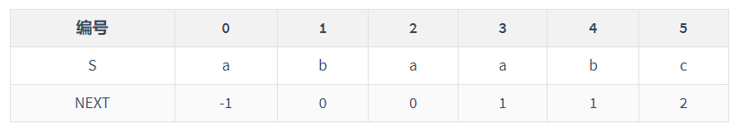

4、串
一、简单模式匹配
时间复杂度：O(mn)
二、KMP算法
时间复杂度：O(m+n)
求next数组
- 求PM表：前缀与后缀并集中最长的子串的长度
- 将PM表右移一位，首位补-1
- 视情况+1
- j从1开始
例：设主串T=“abaabaabcabaabc”，模式串S=“abaabc”，采用KMP算法进行模式匹配，到匹配成功为止，进行的单个字符比较次数是多少次？
- 求NEXT数组
"a"：0
"ab"：0
"aba"：1
"abaa"：1
"abaab"：2
"abaabc"：0
右移补-1，得：

- 匹配
- 第一趟
- T[5]与S[5]匹配失败
- NEXT[5]=2
- 从T[5]与S[2]开始继续匹配
- 第二趟
- 匹配成功
- 第一趟
- 共计10次
求nextval数组
- 先求next数组
- 对于每一位，对比其next数组index对应的文本
- 若一样，将那一位的值赋值给当前；若不一样，则保留不变